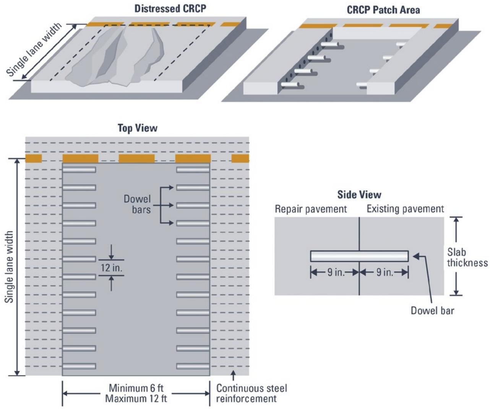
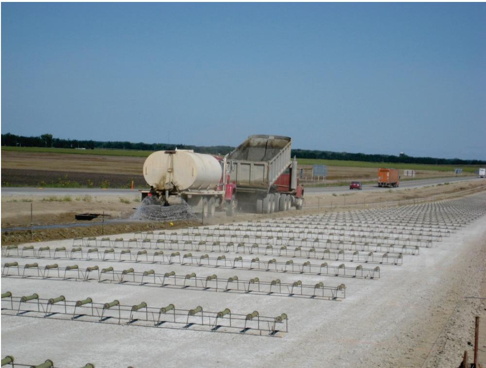
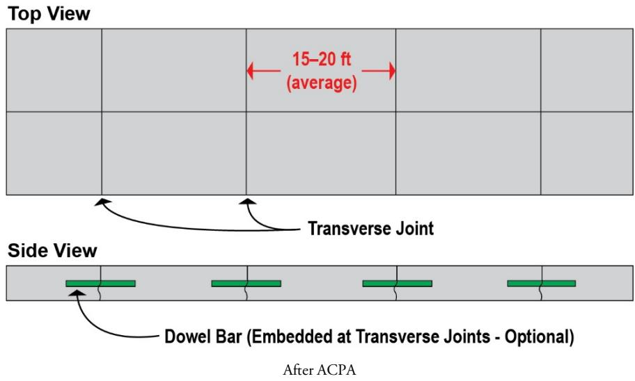
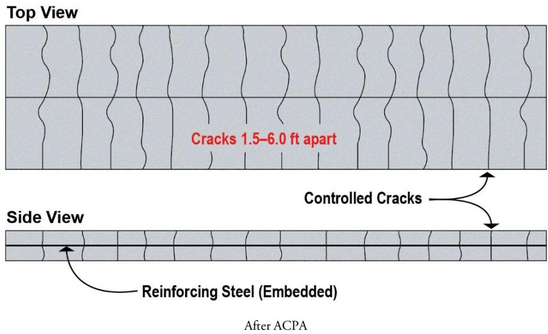
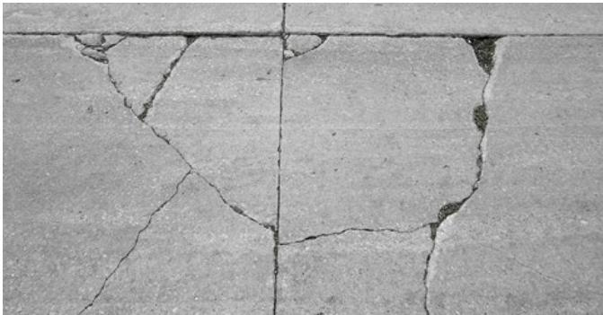
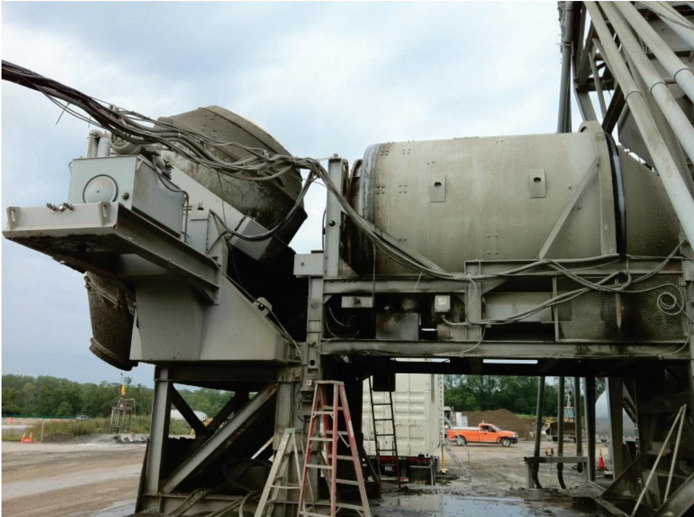
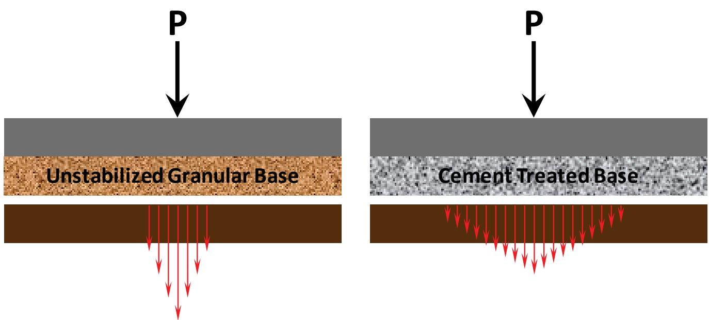
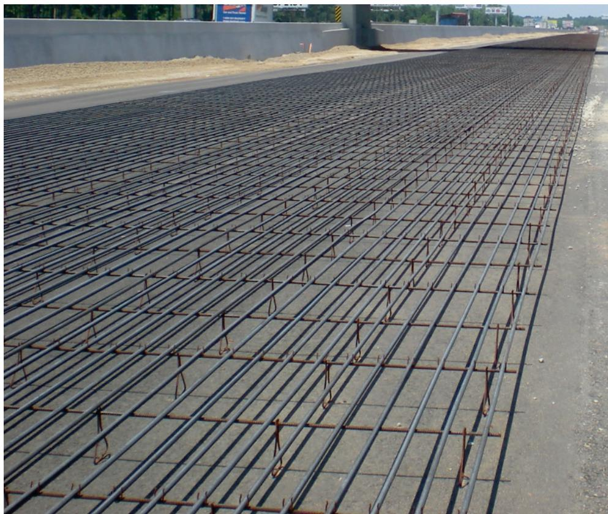

Concrete Pavement Design and Construction
Concrete pavement design and construction is the engineering process aimed at delivering a durable, long‑lasting road surface that meets project specifications while providing reliable load transfer for anticipated traffic loads and resisting harsh environmental conditions [1][2][3][4][5]. To overcome concrete’s inherent tensile weakness, designers control cracking through adequate joint spacing in jointed plain systems or by incorporating distributed or continuous steel reinforcement that keeps cracks tight and maintains aggregate interlock, with slab thickness, joint spacing, reinforcement, concrete strength, and support conditions identified as the most influential variables [1][2][3][5]. The practice encompasses three pavement families—jointed plain concrete pavement (short‑spaced joints, no reinforcement), jointed reinforced concrete pavement (longer joints with modest steel), and continuously reinforced concrete pavement (no regular transverse joints but longitudinal steel)—allowing selection to suit traffic loads, climate extremes, and service‑life goals of 30–40 years [1][3][4][5].
CP Tech Center Guides reports covering “Concrete Pavement Design and Construction” also include the following subtopics: Concrete Pavement Design Optimization.
Concrete Pavement Design and Construction employs Concrete Pavement Design Optimization as a mechanistic‑empirical method that selects slab thickness, joint layout, base treatment, drainage, and reinforcement details to meet structural capacity and functional ride‑quality targets while minimizing total cost. [1][6] The optimization process integrates stress–strain–deflection analysis with empirically calibrated damage‑accumulation models using site‑specific inputs on traffic loading, subgrade stiffness, drainage, and material properties to predict distress such as cracking, faulting, and roughness. [1][5] The procedure relies on in‑place testing of support conditions and iterative software tools like AASHTOWare ME Design or DARWIN M‑E™ to ensure that the chosen combination of thickness, concrete strength, and foundation support provides reliable performance under variable environmental and loading conditions. [1][7]
Sources (7)
Sub-concepts (1)
Purpose and design objectives
Concrete pavement design and construction is intended to solve the fundamental engineering problem of delivering a durable, long‑lasting road surface that satisfies project specifications while providing reliable load transfer for anticipated traffic loads and resisting harsh environmental conditions. To achieve this, designers must manage concrete’s inherent tensile weakness by controlling cracking through appropriate joint spacing or continuous reinforcement, ensuring a strong bond when new concrete is placed over existing pavement, and accommodating multi‑directional slab movements. The guides state that the design must address “the most influential design‑related variables for structural performance (at a given level of traffic) are slab thickness, joint spacing, reinforcement, concrete strength, and support conditions.” Jointed plain concrete pavements meet this need by providing enough joints to direct cracking, as described: “JPCPs contain enough joints to control the location of all expected natural cracks.” Continuously reinforced systems rely on steel to keep cracks tight and maintain load transfer, exemplified by the quote: “The continuous steel reinforcement is intended to keep the cracks from opening, thereby providing adequate load transfer through aggregate interlock.” Across sources, the overarching performance need is summarized as a requirement to “provide long‑lasting pavements that meet or exceed specific project requirements.” [1][2][3][4][5]
The following figure illustrates specific details of a jointed full-depth reclamation design for continuously reinforced concrete pavement in South Carolina.

Details of the South Carolina jointed FDR of CRCP [4]It depicts the installation of epoxy-coated dowel bars grouted into existing transverse joint faces to provide load transfer at the joints.
[1] — Ch. 3 (pp. 51–104), Ch. 10 (pp. 316–322); [2] — Description (pp. 20–22); [3] — Ch. 1 (pp. 28–30), Ch. 4 (pp. 322–334); [4] — Ch. 1 (p. 22); [5] — 2. Factors Influencing Long-Li… (p. 18), 4. Pre-Paving (p. 54)
The guides require that concrete pavement design meet several key objectives. Functionally it must provide sufficient load‑carrying capacity and retain the intended surface texture, limiting distresses such as loss of texture or excessive roughness. Structural performance depends on the variables identified as most influential: The most influential design-related variables for structural performance (at a given level of traffic) are slab thickness, joint spacing, reinforcement, concrete strength, and support conditions. To achieve durability the design must limit overall distress over the pavement’s design life, keeping transverse crack widths under 0.02 in – “The transverse crack width is generally less than 0.02 inches wide at the top of the slab for well‑performing CRCP” and provide proper cover, subgrade preparation, vibration, curing, and restraint control. Safety is addressed by preventing random fatigue‑induced longitudinal or transverse cracks, punchouts, and uncontrolled spalling through appropriate thickness, reinforcement, joint design, and timely saw cutting. Serviceability is ensured by maintaining a smooth riding surface throughout the pavement’s life and by preserving continuity across joints with dowel bars or tie bars that keep cracks tightly closed. [1][2][3][5]
The following figure illustrates an example of slab cracking output generated by the AASHTOWare Pavement ME Design software.
 Example slab cracking output from AASHTOWare Pavement ME Design software [3]
Example slab cracking output from AASHTOWare Pavement ME Design software [3]
It compares two reliability-based prediction models against a user-defined threshold value, illustrating how environmental impacts and loading configurations influence the development of fatigue cracking. This output demonstrates how AASHTOWare Pavement ME Design software is used to develop pavement designs that limit distresses over the design period.
[1] — Ch. 3 (pp. 51–104); [2] — Description (pp. 20–22); [3] — Ch. 1 (p. 28), Ch. 4 (pp. 322–334); [5] — 2. Factors Influencing Long-Li… (p. 18), 4. Pre-Paving (p. 54)
Scope and applicability
The guides identify three concrete pavement families that are appropriate for a wide range of projects. Jointed plain concrete pavement (JPCP) – slabs 7–12 in thick with transverse joints spaced 15 to 20 ft and no distributed reinforcement – is the cost‑effective, reliable choice for new construction, reconstruction or unbonded overlay work on standard traffic routes. Jointed reinforced concrete pavement (JRCP) uses longer joint spacing of about 30 to 40 ft and incorporates welded‑wire fabric or deformed bars comprising roughly 0.10 %–0.20 % of the slab cross‑section, providing additional crack control where higher loads are expected. Continuously reinforced concrete pavement (CRCP) eliminates regular transverse joints, relies on continuous longitudinal steel reinforcement of about 0.6 %–0.8 % (or 0.70 %–0.80 %) of the slab cross‑section and may include transverse bars every three feet; it is selected for heavily trafficked, high‑volume urban corridors or other applications that demand long service lives (30–40 years) and superior durability despite higher steel cost. All three systems can be applied in new road construction, reconstruction of existing alignments, or overlay (resurfacing) projects, and they perform across climate extremes from severe freezing winters to extreme desert heat. Thin‑section concrete pavements are emerging for commercial applications where reduced thickness is advantageous. Proper design requires appropriate concrete mix properties (flexural strength, elastic modulus), adequate slab thickness, suitable joint spacing, reinforcement detailing, and sound construction practices. [1][2][3][4][5]
The following figure illustrates a typical installation of jointed plain concrete pavement before paving.

Preparation of a subgrade for Jointed Plain Concrete Pavement (JPCP) construction, showing installed dowel bar assemblies and water curing. [5]The image displays the preparation phase of a concrete pavement project where rows of metal dowel bars are positioned on the prepared subgrade to facilitate load transfer between slabs. A water truck is actively spraying moisture onto the ground, which serves as a curing or compaction measure for the base material prior to paving.
[1] — Ch. 3 (pp. 51–104), Ch. 10 (pp. 318–322); [2] — Description (pp. 20–22); [3] — Ch. 1 (pp. 28–30), Ch. 4 (pp. 322–333); [4] — Ch. 1 (p. 22); [5] — 2. Factors Influencing Long-Li… (p. 18), 4. Pre-Paving (p. 54)
The guides note that “A pavement joint that allows relative movement in three directions” is required to isolate structures such as bridges, making a continuous slab unsuitable. They also point out that “CRCP designs generally cost more than JPCP designs initially due to increased quantities of steel,” and that when slabs are thin, traffic volumes are low, or support conditions are poor, the added reinforcement does not provide sufficient benefit. Consequently, “JPCP is the most most common type of concrete pavement constructed,” and it is preferred in these limiting situations. [1][3][4]
The following figure illustrates jointed plain concrete pavement (JPCP), which is identified as the most common type of concrete pavement constructed.

Schematic diagram of Jointed Plain Concrete Pavement (JPCP) showing transverse joint spacing and optional dowel bars. [3]The figure displays a top view of concrete slabs separated by transverse joints with an average spacing labeled as 15–20 ft, alongside a side view illustrating the placement of green dowel bars embedded across these joints. This visual representation supports the concept of concrete pavement design by demonstrating how joint spacing and load transfer devices are utilized to control cracking in Jointed Plain Concrete Pavement (JPCP).
[1] — Ch. 10 (p. 322); [3] — Ch. 1 (pp. 29–30), Ch. 4 (pp. 329–334); [4] — Ch. 1 (p. 22)
Design inputs and requirements
The design and construction of concrete pavements are governed by agency specifications such as “some agencies reinforce oddshaped panels to hold expected cracks tight (ACPA 2008)” and the broader allowance that “Reinforcement may be used in concrete pavements to improve the ability of concrete to carry tensile stresses.” Across sources, agencies have adopted “standard values for the geometric characteristics of pavements as well as for the materials’ specifications so that designs become more practical,” while recognizing that “The most influential design‑related variables for structural performance (at a given level of traffic) are slab thickness, joint spacing, reinforcement, concrete strength, and support conditions.” Serviceability criteria also require attention to “Functional performance of the pavement is often related to features like smoothness, texture, and noise.”
For jointed plain concrete pavements (JPCP), specifications mandate that they “do not contain reinforcement” and must be unreinforced, with “JPCPs contain enough joints to control the location of all expected natural cracks.” Joint spacing is limited to “transverse joints spaced less than 15 to 20 ft apart” and, for typical slab thicknesses, “The spacing between transverse joints is typically between 15 and 20 feet for slabs 7–12 inches thick.” Load transfer may be provided by “may contain dowel bars across the transverse joints,” and longitudinal tie bars are permitted as described in “JPCP does not contain any steel reinforcement. However, there may be load transfer devices (e.g., dowel bars) at transverse joints and deformed steel bars (e.g., tie bars) at longitudinal joints.” Subgrade requirements state that “The strength and deformation characteristics of the subgrade and unstabilized bases are based on achieving a target density as determined by laboratory testing prior to construction.”
Continuously reinforced concrete pavements (CRCP) are governed by separate specifications that require “Continuously reinforced concrete pavements use steel reinforcing bars throughout the length of the pavement.” The reinforcement design follows that “The bar size and spacing is determined through the design process, bars should be placed within the specified tolerances,” and practices such as tube‑feeders for longitudinal steel are prohibited: “In the past, some CRCPs have been constructed using tube feeders for the longitudinal steel; this practice is no longer recommended or allowed in most states because the steel was not maintained at mid-slab depth.” Finally, pavement thickness must satisfy that it is “The thickness design is based on anticipated traffic loading (weights, configuration, and number), stiffness of the support, and the concrete properties (flexural strength, elastic modulus, and Poisson’s ratio).” [1][2][3][5]
The following figure illustrates a continuously reinforced concrete pavement.

Diagram of a continuously reinforced concrete pavement showing top and side views. [3]The figure displays the structural layout of a continuously reinforced concrete pavement through top and side views, illustrating how longitudinal steel reinforcement is embedded within the slab to manage cracking. Transverse cracks are shown distributed across the surface at intervals that correspond to the source description of 1.5 to 6 feet, demonstrating how the design controls cracking without transverse contraction joints.
[1] — Ch. 3 (p. 104); [2] — Description (pp. 20–22); [3] — Ch. 1 (p. 28), Ch. 4 (pp. 329–333); [5] — 2. Factors Influencing Long-Li… (p. 18), 4. Pre-Paving (p. 54)
Design methods and criteria
Concrete pavement design proceeds through a sequence of empirically based procedures rather than a single closed‑form equation. The strength and deformation characteristics of the subgrade and unstabilized bases are based on achieving a target density as determined by laboratory testing prior to construction; stabilized bases are evaluated with unconfined compressive strength or dynamic modulus as appropriate. Reinforcement is placed near the slab mid‑depth—“high steel” being within roughly two inches of the surface—and longitudinal reinforcement follows the guideline “continuous longitudinal reinforcement, which ranges from approximately 0.70 to 0.80 percent of the cross‑sectional area of the pavement slab.” Transverse bars are typically spaced on a 3‑ft (0.9 m) center‑to‑center pattern. The design thickness is governed by traffic demands and material stiffness; “The thickness design is based on anticipated traffic loading (weights, configuration, and number), stiffness of the support, and the concrete properties (flexural strength, elastic modulus, and Poisson’s ratio).” Longitudinal steel content is treated as a variable because it controls transverse crack spacing, load transfer, and crack width. Expected random hairline cracks develop at 2–8 ft intervals, with “The transverse crack width is generally less than 0.02 inches wide at the top of the slab for well‑performing CRCP.” Where necessary, expansion or isolation joints are added to limit compressive stresses. Construction timing of longitudinal saw cuts follows a window that depends on ambient conditions, concrete mix characteristics, base friction, and overall geometry; proper vibration consolidation and prompt curing ensure uniform strength development. [3]
The following figure illustrates the consequences of omitting this critical reinforcement by showing longitudinal cracking in pavement.
 Longitudinal cracking in pavement due to the lack of a longitudinal joint [3]
Longitudinal cracking in pavement due to the lack of a longitudinal joint [3]
The image displays a concrete pavement surface featuring a prominent, irregular crack running longitudinally along the lane. The formation of a system of joints is essential for controlling crack locations and preventing the development of excessive stresses at critical locations.
[3] — Ch. 4 (pp. 322–333)
Concrete pavement designs must satisfy performance‑based reliability criteria that ensure a typical design service life of 30 to 40 years under cumulative traffic on the order of tens of millions of equivalent load repetitions. For Jointed Plain Concrete Pavement (JPCP) the slabs are unreinforced (“the slabs do not contain distributed reinforcement between the transverse joints”; “They do not contain reinforcement.”) and must include sufficient joint density so that every anticipated natural crack terminates at a joint (“JPCPs contain enough joints to control the location of all expected natural cracks.”). Transverse joint spacing is limited to roughly 15–20 ft for slabs 7–12 in thick (“which are generally spaced 15 to 20 ft apart”; “The spacing between transverse joints is typically between 15 and 20 feet for slabs 7–12 inches thick”; “Jointed plain concrete pavement (JPCP) consists of short‑jointed pavements (with transverse joints generally spaced 15 ft apart)”). Load transfer across these joints may be provided by dowel bars (“may contain dowel bars across the transverse joints to transfer heavy (e.g., trucks and buses) traffic loads across slabs”; “They may contain dowel bars across the transverse joints to transfer traffic loads across slabs”) and tie‑bars in longitudinal contraction joints (“may contain tiebars across longitudinal joints to promote aggregate interlock between slabs”; “may contain tiebars across longitudinal contraction joints”).
Jointed Reinforced Concrete Pavement (JRCP) employs longer joint spacings of about 30–40 ft and incorporates welded‑wire fabric or deformed bars amounting to roughly 0.10–0.20 % of the slab cross‑sectional area (“Jointed reinforced concrete pavement (JRCP) employs longer joint spacing (typically about 30 to 40 ft) and contains steel reinforcement (welded wire fabric or deformed steel bars comprising about 0.10% to 0.20% of the cross‑sectional area)”).
Continuously Reinforced Concrete Pavement (CRCP) eliminates regular transverse joints (“CRCP designs have no transverse joints”; “CRCP has no regularly spaced transverse joints”) and must contain longitudinal reinforcement equal to approximately 0.6–0.8 % of the slab cross‑section (“continuous longitudinal reinforcement, which ranges from approximately 0.70 to 0.80 percent of the cross‑sectional area of the pavement slab”; “Continuously reinforced concrete pavements (CRCP) have … typically 0.6% to 0.8% of the cross‑sectional area”). Transverse steel is placed at about 3 ft on‑center spacing (“individual bars placed approximately 3 feet apart”; “the transverse steel is routinely placed on 3‑foot (0.9 m), center‑to‑center spacing”) to control random hairline cracks to a spacing of 2–8 ft and a maximum width of less than 0.02 in (“expected to develop hairline random cracks at anywhere from 2 to 8 feet (0.6 to 2.4 m) spacing”; “The transverse crack width is generally less than 0.02 inches wide at the top of the slab for well‑performing CRCP”). Longitudinal steel should be positioned near mid‑depth (“the depth of steel is typically at mid-depth of the slab or slightly higher”) and run the full length of the pavement with bar size and spacing determined through design tolerances (“Continuously reinforced concrete pavements use steel reinforcing bars throughout the length of the pavement”; “The bar size and spacing is determined through the design process, bars should be placed within the specified tolerances”).
Slab thickness must be selected based on anticipated traffic loading (weights, configuration, repetitions), support stiffness, and concrete material properties (flexural strength, elastic modulus, Poisson’s ratio) (“The thickness design is based on anticipated traffic loading (weights, configuration, and number), stiffness of the support, and the concrete properties (flexural strength, elastic modulus, and Poisson’s ratio).”). Small reductions in thickness markedly reduce load‑carrying capacity and can precipitate fatigue cracking, random cracks, and premature punchouts (“The load carrying capacity is strongly influenced by relatively small changes in slab thickness”; “If the slab is designed to be thin, random cracks (both longitudinal and transverse) are likely to develop due to fatigue damage”; “Eventually, punchouts are also likely to occur, well before the end of the pavement design life”).
Construction practices required for reliability include uniform subgrade and base support meeting target density and strength, internal vibration for concrete consolidation (“Consolidation of the concrete is accomplished through internal vibration.”), prompt curing, and saw‑cutting of longitudinal joints within the prescribed cutting window (“Saw cutting of the longitudinal joints must take place within a specific timeframe, termed the saw cutting window.”). When a stabilized base is used, excess frictional restraint at the slab/base interface must be accounted for to prevent closely spaced cracks. Collectively these criteria, thresholds, assumptions, and reliability requirements constitute the design and construction framework that concrete pavements must satisfy to achieve their intended service life and structural performance. [1][3][4][5]
The following figure illustrates corner cracking in jointed concrete pavement.

Corner cracking in jointed concrete pavement [1]The image displays a close-up view of a rigid pavement surface characterized by intersecting transverse and longitudinal joints. A prominent structural distress, identified as corner cracking or corner breaks, is visible where the slab edges meet at an intersection.
[1] — Ch. 3 (p. 51); [3] — Ch. 1 (pp. 28–30), Ch. 4 (pp. 322–334); [4] — Ch. 1 (p. 22); [5] — 2. Factors Influencing Long-Li… (p. 18), 4. Pre-Paving (p. 54)
Structural section and dimensions
The guides concur that for Jointed Plain Concrete Pavement (JPCP) the transverse joints are “generally spaced 15 to 20 ft apart” and “spacing between transverse joints is typically between 15 and 20 feet for slabs 7–12 inches thick.” The joint spacing may be described as “less than 15 to 20 ft apart.” No reinforcement is placed in the slab itself – the guides state that “the slabs do not contain distributed reinforcement between the transverse joints,” “JPCP does not contain any steel reinforcement,” and “They do not contain reinforcement.” Load‑transfer devices such as dowel bars or tie‑bars may be used across joints (“may contain dowel bars across the transverse joints”, “may contain tiebars across longitudinal contraction joints”).
For Jointed Reinforced Concrete Pavement (JRCP) the joint spacing is longer, described as “longer joint spacing (typically about 30 to 40 ft).” Reinforcement in JRCP is limited to roughly “steel reinforcement … comprising about 0.10% to 0.20% of the crosssectional area.” Continuously placed longitudinal steel for reinforced or continuously reinforced pavements is specified at “approximately 0.70 to 0.80 percent of the cross‑sectional area of the pavement slab” (or “0.6 to 0.8 percent of the cross‑sectional area”). Transverse reinforcement bars are installed on a spacing of about “individual bars placed approximately 3 feet apart.” and “the transverse steel is routinely placed on 3‑foot (0.9 m), center‑to‑center spacing.” The cover depth for this steel is governed by the support chairs and is “typically at mid‑depth of the slab or slightly higher,” while high‑steel near the surface may be within “generally 2 inches (50 mm) or less.”
Slab thickness is not fixed across the guides; one source links joint spacing to slabs “7–12 inches thick,” while another notes that “The thickness design is based on anticipated traffic loading (weights, configuration, and number), stiffness of the support, and the concrete properties.” Consequently, no universal slab‑thickness value is prescribed.
Base, subbase, treated‑soil layer, shoulder width, and edge‑support dimensions are not given explicit values in any of the guides; they are left to be determined from traffic loading, support stiffness, and engineering judgment. [1][3][4][5]
[1] — Ch. 3 (p. 51); [3] — Ch. 1 (p. 28), Ch. 4 (pp. 322–333); [4] — Ch. 1 (p. 22); [5] — 2. Factors Influencing Long-Li… (p. 18)
Materials and mixture design
The design must define the concrete surface course by specifying its required compressive strength and the fundamental mechanical properties “flexural strength, elastic modulus, and Poisson’s ratio”. Reinforcement is a mandatory material: “Reinforcement may be used in concrete pavements to improve the ability of concrete to carry tensile stresses and to hold tightly together any random transverse cracks that develop in the slab.” Conventional steel reinforcement is described as “Conventional reinforcement is generally in the form of welded‑wire fabric or deformed bars that are placed at specific locations in the pavement”, with quantity limits that differ by pavement type. For jointed reinforced pavements the guides require “welded wire fabric or deformed steel bars comprising about 0.10% to 0.20% of the cross‑sectional area”, whereas continuously reinforced concrete pavements call for “continuous longitudinal reinforcement, which ranges from approximately 0.70 to 0.80 percent of the cross‑sectional area of the pavement slab” (also expressed as “typically 0.6 to 0.8 percent of the cross‑sectional area”). Transverse steel is also prescribed: bars are “individual bars placed approximately 3 feet apart” and may be provided at “acceptable spacing (3 to 8 ft apart)” to control cracking.
When synthetic fibers replace or supplement steel, the design must state “Fibers are available in a variety of chemistries, lengths, and shapes, and they can be used at various dosages to reach desired performance levels within the pavement or overlay.” The dosage, chemistry, length, and shape are therefore explicit material specifications.
Load‑transfer devices such as dowel or tie bars must be detailed for joint locations. Supporting layers are required to be prepared either as “an unstabilized aggregate base” or as a stabilized layer such as “a cement treated base (CTB) or an asphalt treated base (ATB).” For stabilized bases the design must target “unconfined compressive strength for portland cement, fly ash, or lime‑treated materials and dynamic modulus for asphalt stabilized materials,” while unstabilized bases are governed by a target density established through laboratory testing.
Finally, concrete production quality is mandated: “A properly calibrated concrete plant, good aggregate stockpile management, and the ability to make adjustments to the concrete as a function of ambient conditions are important factors in maintaining uniform properties.” Together with the structural variables identified—slab thickness, joint spacing, reinforcement, concrete strength, and support conditions—the specified materials, their properties, and mixture proportions ensure long‑term pavement performance. [1][2][3][4][5]
The following figure illustrates how proper plant set-up and maintenance are critical to providing uniform concrete.

A large industrial concrete batch plant situated at a construction site. [5]The image displays a heavy-duty concrete batching plant, featuring large mixing drums and a complex steel framework typical of stationary production facilities. Proper plant set-up occurs far before the plant is mobilized on site to ensure safety, productivity, and quality.
[1] — Ch. 3 (p. 104); [2] — Description (pp. 20–22); [3] — Ch. 4 (pp. 322–333); [4] — Ch. 1 (p. 22); [5] — 2. Factors Influencing Long-Li… (p. 18), 4. Pre-Paving (p. 54)
The selection and proportioning of materials in concrete pavement design follows a hierarchical process that first guarantees uniform support from the subgrade and base, then defines slab geometry, and finally tailors reinforcement according to the chosen pavement type. In designing a concrete pavement the engineer first ensures that the subgrade and base will provide uniform support by choosing either an unstabilized aggregate base or a stabilized base (cement‑treated or asphalt‑treated) whose laboratory‑determined target density can be achieved in the field. For stabilized bases the mix is proportioned to meet required structural values, while the slab thickness is sized so that “The thickness design is based on anticipated traffic loading (weights, configuration, and number), stiffness of the support, and the concrete properties (flexural strength, elastic modulus, and Poisson’s ratio).” Reinforcement content is then matched to the pavement type: continuously reinforced sections rely on high longitudinal steel, as described by “Continuously reinforced concrete pavements (CRCP) have no regularly spaced transverse joints but contain a significant amount of longitudinal steel reinforcement (typically 0.6% to 0.8% of the cross‑sectional area).” Jointed reinforced pavements use longer joint spacing and moderate distributed steel, as noted by “Jointed reinforced concrete pavement (JRCP) employs longer joint spacing (typically about 30 to 40 ft) and contains steel reinforcement (welded wire fabric or deformed steel bars comprising about 0.10% to 0.20% of the cross‑sectional area) distributed throughout the slab.” This integrated approach ensures that each material proportion contributes to structural capacity, durability under traffic, constructability in the field, and long‑term performance. [3][4][5]
The following figure illustrates how load distribution differs between unstabilized and stabilized bases.

Load Distribution of Unstabilized and Stabilized Bases [5]The figure visually compares the load distribution characteristics of an unstabilized granular base versus a cement-treated base under a vertical point load. In the unstabilized configuration, red arrows indicate that stress concentrates directly beneath the load and penetrates deeply into the subgrade. Conversely, in the cement-treated base configuration, the arrows spread out laterally before reaching the subgrade, demonstrating a wider distribution of stress.
[3] — Ch. 4 (pp. 322–333); [4] — Ch. 1 (p. 22); [5] — 2. Factors Influencing Long-Li… (p. 18)
Structural details and interfaces
The design of concrete pavements requires a network of joints and reinforcement that control cracking, transfer loads, and accommodate movement. For jointed plain concrete pavement (JPCP) the guides specify short transverse joints “generally spaced 15 to 20 ft apart” (also described as “spaced less than 15 to 20 ft apart”) and may include “dowel bars across the transverse joints” together with “tie‑bars … at longitudinal contraction joints” to provide load transfer and aggregate interlock; JPCP “does not contain reinforcement.” When jointed reinforced concrete pavement is used, the guides call for longer joint spacing of “roughly 30–40 ft” and the inclusion of “welded wire fabric or deformed bars amounting to about 0.10‑0.20 % of the cross‑sectional area” distributed throughout each slab; dowel and tie bars are retained at all joints. Continuously reinforced concrete pavement (CRCP) eliminates intermediate transverse contraction joints, as stated: “no intermediate transverse expansion or contraction joints” and “no regularly spaced transverse joints.” Instead it provides continuous longitudinal reinforcement “typically 0.6 to 0.8 percent of the cross‑sectional area” (or “approximately 0.70 to 0.80 %”) placed near mid‑depth or as high steel within 2 in of the surface, and “transverse reinforcement … placed approximately 3 feet apart” to keep cracks within an acceptable spacing of “3 to 8 ft apart.” CRCP retains transverse and longitudinal construction joints for changes in geometry, and where differential movement is expected (e.g., bridge abutments) an “isolation joint … a pavement joint that allows relative movement in three directions” is provided. All pavement types require load‑transfer devices at joints: the guides note “there may be load transfer devices (e.g., dowel bars) at transverse joints” and “deformed steel bars (e.g., tie bars)” at longitudinal joints. Longitudinal construction joints are tied together with tie bars, lane‑to‑lane ties are limited to three or four lanes, and saw cuts for longitudinal joints must be placed within the prescribed “saw‑cutting window.” [1][2][3][4][5]
The following figure illustrates the concrete reinforcement details for continuously reinforced concrete pavement.
 CRCP reinforcement layout on a roadway subgrade. [3]
CRCP reinforcement layout on a roadway subgrade. [3]
The image displays a grid of steel bars laid out across the prepared ground, consisting of long longitudinal rods and shorter transverse ties supported by small stands to maintain elevation.
[1] — Ch. 3 (pp. 51–104), Ch. 10 (pp. 318–327); [2] — Description (pp. 20–22); [3] — Ch. 1 (p. 28), Ch. 4 (pp. 322–334); [4] — Ch. 1 (p. 22); [5] — 2. Factors Influencing Long-Li… (p. 18), 4. Pre-Paving (p. 54)
The design of every interface in a concrete pavement—between slabs, between successive placements, and between the pavement and adjacent structures—is treated as a purpose‑designed joint. Across sources the most influential variables for structural performance are identified as slab thickness, joint spacing, reinforcement, concrete strength, and support conditions. For jointed plain concrete pavements (JPCP) the guides require regularly spaced transverse contraction joints “generally spaced 15 to 20 ft apart” (or “typically between 15 and 20 feet for slabs 7–12 inch thick”) that “may contain dowel bars across the transverse joints to transfer heavy (e.g., trucks and buses) traffic loads across slabs.” Longitudinal construction joints are tied together with steel tie bars, described as “tie bars that lock aggregate between adjacent slabs” or “steel tie bars across longitudinal joints,” to maintain alignment. The joint layout is intended so that “all necessary cracking occurs at joints and not elsewhere in the slabs,” and “JPCPs contain enough joints to control the location of all expected natural cracks.” For reinforced jointed slabs, longer joint spacings of “typically about 30 to 40 ft” are permitted, still using dowel bars and tie bars for load transfer and crack control.
Continuously reinforced concrete pavement (CRCP) eliminates regular transverse contraction joints; instead it is “designed without sawed transverse contraction joints,” relying on “steel reinforcing bars throughout the length of the pavement” to keep cracks tightly closed. Where compressive stress buildup could occur, “transverse expansion and isolation joints are provided where necessary to prevent compressive stress build‑up … or also to isolate the pavement from adjacent structures.” Isolation joints “allow relative movement in three directions” and “interrupt all or part of the bonded reinforcement,” preventing crack propagation into adjoining structures.
When a new concrete layer is placed over existing pavement, a bonding agent must be applied: it is defined as “a substance applied to an existing surface to create a bond between it and a succeeding layer, as between a bonded overlay and existing concrete pavement.” The termination of one placement and the start of the next are marked by a construction joint, described as “the junction of two successive placements of concrete, typically with a keyway or reinforcement across the joint.” If paving is halted for a day, a header joint—“a transverse construction joint installed at the end of a paving operation or other placement interruptions”—provides a defined restart location.
The interface between the surface slab and its supporting layers is addressed through proper subgrade preparation and base selection. The guides require “proper preparation of the subgrade soil and placement of either an unstabilized aggregate base or a stabilized aggregate base, such as a cement treated base (CTB) or an asphalt treated base (ATB).” Stabilized bases are evaluated by “unconfined compressive strength for portland cement, fly ash, or lime‑treated materials and dynamic modulus for asphalt stabilized materials,” ensuring consistent support and acting as a water barrier.
Reinforcement is placed at a depth governed by the height of support chairs; “high steel … refers to the steel placement very near the surface, generally 2 inches (50 mm) or less,” which is avoided to prevent spalling. Curing compounds or alternative methods are applied promptly after finishing to achieve early‑age strength and limit moisture‑induced distress. [1][2][3][4][5]
The following figure illustrates properly supported reinforcing steel.

Properly Supported Reinforcing Steel for Concrete Pavement Construction [5]The image displays a grid of longitudinal steel reinforcing bars laid out on the ground, held at a specific height by small support chairs. This setup illustrates the construction requirement that bars should be placed on supports which hold the steel at the correct height to ensure proper depth within the slab. The figure demonstrates a key aspect of continuously reinforced concrete pavement design, where distributed longitudinal steel is used to control cracking and maintain aggregate interlock.
[1] — Ch. 3 (p. 51), Ch. 10 (pp. 316–322); [2] — Description (pp. 20–22); [3] — Ch. 1 (p. 28), Ch. 4 (pp. 322–331); [4] — Ch. 1 (p. 22); [5] — 2. Factors Influencing Long-Li… (p. 18), 4. Pre-Paving (p. 54)
Drainage, environment, and accessibility
The guides agree that concrete pavement design must be tailored to local climate extremes—whether freezing winters or intense heat—to achieve long‑term durability, relying on suitable materials, an adequate design, and sound construction practices. To manage moisture and drainage, the subgrade is prepared and a base layer of unstabilized aggregate or a stabilized material such as cement‑treated or asphalt‑treated base is placed, which “it also serves as a barrier to surface water intrusion.” Reinforcement is positioned away from the slab face (“generally 2 inches (50 mm) or less”) to protect against cracking. Joint cutting schedules are tied to ambient temperature, humidity, wind, and mix characteristics—“Longitudinal saw cuts are scheduled within a specific window that depends on ambient temperature, humidity, wind, and concrete mix characteristics to ensure proper crack formation.” Finally, “adequate and timely curing is necessary to promote strength development in the concrete, minimize moisture and temperature differentials within the slab during early age strength development, and minimize plastic shrinkage cracking,” with curing methods selected for the prevailing climate. [2][3]
[2] — Description (pp. 20–22); [3] — Ch. 4 (pp. 329–331)
Concrete pavement designs must satisfy geometric, safety, accessibility, and user‑performance criteria. Across the guides transverse joints are required to be spaced less than 15 to 20 ft apart (generally spaced 15 to 20 ft apart; the spacing between transverse joints is typically between 15 and 20 feet for slabs 7–12 inches thick; short‑jointed pavements have transverse joints generally spaced 15 ft apart). Joint layout must provide enough joints to control the location of all expected natural cracks. Where load transfer is needed, dowel bars may be placed across the transverse joints to transfer heavy truck and bus loads and maintain surface continuity (may contain dowel bars across the transverse joints; there may be load transfer devices (e.g., dowel bars) at transverse joints). Longitudinal contraction joints may include tie bars or deformed steel tie bars to promote aggregate interlock between adjacent slabs (may contain tiebars across longitudinal joints; may contain tiebars across longitudinal contraction joints; there may be … tie bars at longitudinal joints). Reinforcement requirements vary by pavement type: jointed reinforced concrete pavements employ longer joint spacing of about 30 to 40 ft and contain steel reinforcement equal to roughly 0.10%–0.20% of the slab cross‑section (contains steel reinforcement … comprising about 0.10% to 0.20% of the cross‑sectional area); continuously reinforced concrete pavements omit regular transverse joints but incorporate longitudinal steel amounting to about 0.6%–0.8% of the cross‑section, producing transverse crack spacing of approximately 3 to 8 ft (This high steel content both influences the development of transverse cracks within an acceptable spacing (about 3 to 8 ft)). Bars must be placed on supports that hold the steel at the correct height and positioned with sufficient offset from the pavement edge to avoid damage from spreading equipment (Bars should be placed on supports which hold the steel at the correct height; Attention should be paid to the offset between the outside bars and the edge of pavement, spreading and concrete equipment can hit bars which are placed too close to the edge of pavement). The guides also require that geometric characteristics such as slab thickness, joint spacing, and reinforcement layout follow standard values for the geometric characteristics of pavements, while functional performance is linked to smoothness, surface texture, and acceptable noise levels (Functional performance of the pavement is often related to features like smoothness, texture, and noise). Collectively these requirements ensure compliance with accessibility standards, provide safe vehicle operation, and deliver consistent performance for users. [1][2][3][4][5]
The following figure illustrates the transverse cracking that can result from using excessive slab lengths in concrete pavement design.
 Transverse cracking caused by excessive slab lengths (20-foot panel) [3]
Transverse cracking caused by excessive slab lengths (20-foot panel) [3]
The image displays a concrete pavement surface featuring a prominent, jagged transverse crack that extends across the width of the lane. This visual evidence illustrates how inadequate joint spacing can lead to uncontrolled cracking in concrete pavements. Such failures highlight the importance of adhering to design guidelines, such as limiting slab length relative to thickness, to ensure a durable road surface.
[1] — Ch. 3 (p. 51); [2] — Description (pp. 20–22); [3] — Ch. 1 (p. 28); [4] — Ch. 1 (p. 22); [5] — 2. Factors Influencing Long-Li… (p. 18), 4. Pre-Paving (p. 54)
Verification and expected performance
The designs target a long‑term performance horizon, with typical design service lives of 30 to 40 years and durability gauged by the cumulative traffic it endures – traffic over the service life of the pavement can be on the order of tens of millions of equivalent load repetitions. Performance is expected to be reflected in limited distress: transverse cracks should appear in a random hairline pattern spaced roughly every 2 to 8 feet, and an acceptable spacing of three to eight feet apart is also cited. The transverse crack width is generally less than 0.02 inches wide at the top of the slab for well‑performing CRCP. Distress resistance is verified by field measurement of crack spacing after construction and by ongoing visual inspection – performance is evaluated by inspecting crack spacing and width and by observing functional distresses such as loss of surface texture or roughness, which together indicate ride quality and functional integrity over the intended service life. The designs incorporate a significant amount of longitudinal reinforcement, typically 0.6 to 0.8 percent of the cross‑sectional area, and where used, transverse reinforcement; this high content of reinforcement both influences the development of transverse cracks within an acceptable spacing (3 to 8 ft apart) and serves to hold cracks tightly together. Some agencies use CRCP designs for high‑traffic, urban routes because of their suitability for high‑traffic loads. [3][5]
The following figure illustrates the closely spaced transverse cracks characteristic of well-performing continuous reinforced concrete pavement.
 Closely spaced transverse cracks in a 25-year-old continuously reinforced concrete pavement (CRCP) [3]
Closely spaced transverse cracks in a 25-year-old continuously reinforced concrete pavement (CRCP) [3]
The image displays the surface of a concrete highway lane characterized by numerous fine, closely spaced vertical lines running across the width of the slab. These features represent the “hairline random cracks” that are expected to develop in CRCP at spacings from 2 to 8 feet, where continuous steel reinforcement keeps them tight for load transfer. The pavement exhibits the typical distress pattern of a well-performing CRCP structure designed for long-term durability.
[3] — Ch. 1 (pp. 29–30), Ch. 4 (pp. 322–334); [5] — 2. Factors Influencing Long-Li… (p. 18)
Related Concepts
References
- P. Taylor, T. Van Dam, L. Sutter, and G. Fick, "Integrated Materials and Construction Practices for Concrete Pavement: A State-of-the-Practice Manual," National Concrete Pavement Technology Center, Rep. Part of InTrans Project 13-482; TPF-5(286), 2019. [Online]. Available: https://www.cptechcenter.org/wp-content/uploads/2019/12/IMCP_manual.pdf
- S. Garber, R. O. Rasmussen, and D. Harrington, "Guide to Cement-Based Integrated Pavement Solutions," Institute for Transportation, Iowa State University, 2011. [Online]. Available: https://www.cptechcenter.org/wp-content/uploads/2018/08/IPS.pdf
- D. Harrington, M. Ayers, T. Cackler, G. Fick, D. Schwartz, K. Smith, M. B. Snyder, and T. Van Dam, "Guide for Concrete Pavement Distress Assessments and Solutions: Identification, Causes, Prevention, and Repair," National Concrete Pavement Technology Center, 2018. [Online]. Available: https://www.cptechcenter.org/wp-content/uploads/2019/01/concrete_pvmt_distress_assessments_and_solutions_guide_w_cvr.pdf
- K. Smith, M. Grogg, P. Ram, K. Smith, and D. Harrington, "Concrete Pavement Preservation Guide (Third Edition)," National Concrete Pavement Technology Center, 2022. [Online]. Available: https://www.cptechcenter.org/wp-content/uploads/2022/08/concrete_pvmt_preservation_guide_3rd_edition_web.pdf
- G. Fick, P. Taylor, R. Christman, and J. M. Ruiz, "Field Reference Manual for Quality Concrete Pavements," The Transtec Group, Rep. FHWA-HIF-13-059; DTFH61-08-D-00019-T-10002, 2012. [Online]. Available: https://www.cptechcenter.org/wp-content/uploads/2018/08/hif13059.pdf
- J. Gross, D. Harrington, P. Wiegand, and T. Cackler, "Guidance for Improving Foundation Layers to Increase Pavement Performance on Local Roads," National Concrete Pavement Technology Center, Rep. IHRB Project TR-640; InTrans Project 11-422, 2014. [Online]. Available: https://www.cptechcenter.org/wp-content/uploads/2018/03/IHRB_TR-640_foundation_layers_guide.pdf
- J. Weiss, M. T. Ley, L. Sutter, D. Harrington, J. Gross, and S. L. Tritsch, "Guide to the Prevention and Restoration of Early Joint Deterioration in Concrete Pavements," National Concrete Pavement Technology Center Iowa State University, Rep. InTrans Project 15-555; TR-697, 2016. [Online]. Available: https://www.cptechcenter.org/wp-content/uploads/2018/03/2016_joint_deterioration_in_pvmts_guide.pdf